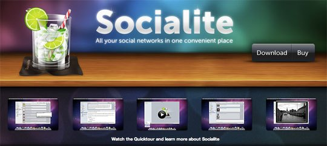

Â

Internette çok fazla sayıda sosyal ağ bulunması ve bunların pek çoğuna üye olmam sebebiyle, tüm bu siteleri tek bir çatı altında toplayan programlara yada web sitelerine gereksinim duyuyorum. Bunların içinde en derli toplu olanlarının başında FriendFeed geliyordu.
Ama her zaman web tabanlı uygulamaları kullanmak mümkün olmuyor. Bilgisayara yüklenebilecek bir program olarak EventBox (Beta) gerek güzel dizaynı gerek sade yapısı ile dikkatimi çekti ve kullanmaya başladım.
EventBox’ı RealMacSoftware satın aldı. Programın ismi Socialite olarak deÄŸiÅŸti. Uygulamadaki kimi özellikler çıkarıldı, daha modüler bir yapı ile baÅŸtan yazıldı. Twitter API’de yapılan deÄŸiÅŸikliklere uygun hale getirildi.
Facebook, Twitter, Flickr, Digg güncellemelerini ve RSS feedlerini tek bir programdan takip etmenin yanında bu programı en çok Google Reader’a ulaÅŸmak için kullanıyorum.
Bugün 1.0.2 güncellemesi yayınlanan Socialite son 2 aydır en çok kullandığım uygulamalar arasında yer alıyor.